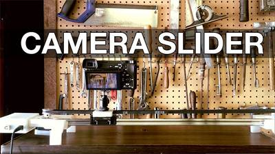
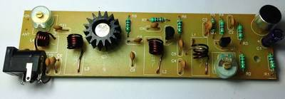

2016-08-18 - Nº 68

Editorial
Esta é a Newsletter Nº 68 que se apresenta com o mesmo formato que as anteriores. Se gostar da Newsletter partilhe-a!
Todas as Newsletters encontram-se indexadas no link.
Esta Newsletter tem os seguintes tópicos:
Esta semana no fórum da Intel o seu CEO apresentou o Intel Joule compute module. Trata-se de uma plataforma de desenvolvimento de alto desempenho especificamente dedicada ao IoT (Internet of Things). No mesmo evento foi igualmente anunciado o projecto Alloy que se trata de uma solução tudo-em-um de realidade virtual aumentada. A Google está a desenvolver um novo sistema designado de Fuchsia desenhado para correr em todas as plataformas. Trata-se de uma alteração na estratégia da Google que até à data tinha desenvolvido todos os seus sistemas recorrendo ao Linux. Contudo, como sabemos, o Linux não é solução para tudo e os engenheiros da Google estão a preparar este novo sistema. Muita documentação e código fonte foram disponibilizados pela Google no GitHub. Noutras noticias a AMD demonstrou uma melhoria significativa de desempenho na sua próxima geração de processadores Zen. A Microsoft disponibilizou o Powershell em open-source e disponível para Linux e MacOS. A Audi desenvolveu um tecnologia que poderá tornar os semáforos obsoletos. A Uber vai começar os testes em Pittsburgh com carros de condução autónoma. Em Helsínquia começaram os primeiros testes com autocarros de condução autónoma. A Intel vai fabricar processadores ARM. Por fim foi descoberto um tubarão na Gronelândia que se pensa ter cerca de 400 anos.
Na Newsletter desta semana apresentamos diversos projetos de maker. Na rubrica "Documentação" apresentamos um novo livro da MagPI designado Simple Electronics with GPIO Zero.
 João Alves ([email protected])
João Alves ([email protected])
O conteúdo da Newsletter encontra-se sob a licença  Creative Commons Attribution-NonCommercial-ShareAlike 4.0 International License.
Creative Commons Attribution-NonCommercial-ShareAlike 4.0 International License.
Novidades da Semana ^
Make Amazing Things Happen in IoT and Entrepreneurship with Intel Joule
"Today during the Intel Developer Forum (IDF) opening keynote, Intel CEO Brian Krzanich introduced the Intel Joule compute module, a high-performance developer platform with support for Intel RealSense depth-sensing cameras, targeted at Internet of Things (IoT) developers, entrepreneurs and established enterprises. The Intel Joule platform will be featured in the upcoming season of Americas Greatest Makers. Several Intel customers and partners such as Microsoft and Canonical are demonstrating potential applications of this technology this week at IDF, including French company PivotHead which built augmented reality safety glasses for manufacturing environments." [...]
Intel Unveils Project Alloy
"During his opening keynote at the 2016 Intel Developer Forum in San Francisco on Tuesday, Intel CEO Brian Krzanich unveiled Project Alloy, an all-in-one virtual reality solution made from the ground up. A clear example of the future of merged reality today, the Alloy platform completely redefines what is possible in an all-in-one VR platform." [...]
Google is developing an OS called Fuchsia, runs on All the Things
"Every single operating system developed by Google to date has one thing in common: they're based on the Linux kernel. Chrome OS, Android, Chromecasts, you name it. Linux has powered Google hardware for years. However, the Linux kernel is not ideal for every situation. Especially in the case of embedded devices like car dashboards or GPS units, full-blown desktop kernels like Linux impact performance and cause other issues. Theres a massive ecosystem of operating systems designed for embedded hardware, and Google may be working on their own. Enter Fuchsia. Googles own description for it on the projects GitHub page is simply, Pink + Purple == Fuchsia (a new Operating System). Not very revealing, is it? When you begin to dig deeper into Fuchsias documentation, everything starts to make a little more sense." [...]
Outras notícias
- BittWare Delivers Arria 10 OpenCL BSPs for Altera OpenCL SDK 16.0.2 Release
- AMD Demonstrates Breakthrough Performance of Next-Generation “Zen” Processor Core
- PowerShell is open sourced and is available on Linux
- Audi’s New Technology Is the Beginning of the End of Traffic Lights
- Uber’s First Self-Driving Fleet Arrives in Pittsburgh This Month
- Airlander 10: Maiden flight at last for longest aircraft
- Helsinki rolls out driverless bus pilot
- Accelerating Foundry Innovation for a Smart and Connected World
- IBM TrueNorth 'cognitive chip' can capture 2,000 fps with a camera
- 400-year-old Greenland shark ‘longest-living vertebrate’
Ciência e Tecnologia ^
Vortex laser offers hope for Moores Law
"The optics advancement may solve an approaching data bottleneck by helping to boost computing power and information transfer rates tenfold" [...]
Patented bioelectrodes have electrifying taste for waste
"New research at Michigan State University and published in the current issue of Nature Communications shows how Geobacter bacteria grow as films on electrodes and generate electricity a process thats ready to be scaled up to industrial levels. The thick biofilm, a gelatin microbial dynamo of sorts, is a combination of cells loaded with cytochromes, metal-based proteins, and pili, hairlike protein filaments discovered and patented by MSUs Gemma Reguera, associate professor of microbiology." [...]
IBM Scientists Imitate the Functionality of Neurons with a Phase-Change Device
"IBM scientists have created randomly spiking neurons using phase-change materials to store and process data. This demonstration marks a significant step forward in the development of energy-efficient, ultra-dense integrated neuromorphic technologies for applications in cognitive computing. Inspired by the way the biological brain functions, scientists have theorized for decades that it should be possible to imitate the versatile computational capabilities of large populations of neurons. However, doing so at densities and with a power budget that would be comparable to those seen in biology has been a significant challenge, until now." [...]
REACH IN AND TOUCH OBJECTS IN VIDEOS WITH INTERACTIVE DYNAMIC VIDEO
"We learn a lot about objects by manipulating them: poking, pushing, prodding, and then seeing how they react. We obviously cant do that with videos just try touching that cat video on your phone and see what happens. But is it crazy to think that we could take that video and simulate how the cat moves, without ever interacting with the real one? Researchers from MITs Computer Science and Artificial Intelligence Laboratory (CSAIL) have recently done just that, developing an imaging technique called Interactive Dynamic Video (IDV) that lets you reach in and touch objects in videos. Using traditional cameras and algorithms, IDV looks at the tiny, almost invisible vibrations of an object to create video simulations that users can virtually interact with." [...]
Documentação ^
A documentação é parte essencial do processo de aprendizagem e a Internet além de artigos interessantes de explorar também tem alguma documentação em formato PDF interessante de ler. Todos os links aqui apresentados são para conteúdo disponibilizado livremente pelo editor do livro.
Livros
Simple Electronics with GPIO Zero
"Learn how to create stunning electronics projects with your Raspberry Pi using our 100 page GPIO Zero Essentials guide. Using the GPIO pins on your Raspberry Pi opens up a whole new world of possibilities. While it might seem daunting at first glance, with our help you’ll be creating electronic circuits and controlling them with the Python programming language within minutes. Grab your breadboard and start taking control of the real world with your Raspberry Pi today!" [...]
Modelos 3D ^
Com a disponibilidade de ferramentas que permitem dar azo a nossa imaginação na criação de peças 3D e espaços como o thingiverse para as publicar, esta rubrica apresenta alguns modelos selecionados que poderão ser úteis.
Cable Tie
"Process Video: https://www.youtube.com/watch?v=e5zVdbsvT2M Keep it together with these quick-printing cable ties! Works great with PLA, but probably better with ABS and other less brittle plastics. Get the other STLs, Solidworks, IGES, and STEP files here : https://goo.gl/qEnEB1" [...]
Electromagnetic Swing - DIY Lorentz Force Experiment
"Don't you love it? Magnetism? Electronics? And 3d printing? In this project I combine all of them together to a little but spectacular do-it-yourself experiment. With just a few components and the 3d printed part you will be able to build your own Lorentz Force Experiment. https://youtu.be/q6b5euhZv3o When a current-carrying wire is placed in a magnetic field, it will experience the Lorentz Force. Build your own Electromagnetic Swing to experience the (Lorentz) Force!" [...]
RobotArm
"This is a 3D Printable Robot Arm. It may need a bit more time to build one, than your normal weekend Project. But the build process is one thing, the application environment the other. And that is what it is all about. Learning, combining and developing custom applications. The design goal for me was to build a Robot, which is stiff and strong, but still small and easy to handle. I used the common NEMA17 Step Motors, which provide enough power for fast movements and high precision. Almost every moveable joint has at least one ball bearing to reduce friction, overall stability and accuracy. The robot is designed to have a low center of mass. The robot is powered over a Computer Power Supply (12V). The gripper is easy to replace and is held horizontally in every position, which simplifies programming and also reduces the cost and complexity of additional axies. Most parts have a industrial look like cast Iron parts." [...]
Projetos Maker ^
Diversos Projetos interessantes.
Tote Quadruped Robot
"Tote is a small (fits inside your palm), four-legged, walking robot, with three degrees of freedom per leg, Arduino for its brains and controlled either with a TV remote, or by additional electronics added on top of it. It is very simple, cheap and sturdy, for this class of robots. Its goal is to be a starting point for anyone who wants to start building multi-legged robots." [...]
monomepi step sequencer
"The brain is a Raspberry Pi 3 which runs the step sequencer program, written in python. The monome is connected to the Pi via USB. An Arduino Uno is also connected to the Pi via USB. The Arduino controls 8 servos, each with a "mallet" attached. (These mallets are actually Lego bricks clumsily taped onto coffee sticks.) The Arduino is programmed to receive serial commands* from the python program. A command is one byte or 8 bits, each bit representing 'on' (play the note) and 'off' (do nothing) states of each servo. The monome is totally controlled by the python program. The program sends serial commands that, for example, tell the monome which buttons need to light up or turn off. It also receives serial data from the monome - like, which buttons are getting pressed and depressed." [...]
How to make Simon Says using ATtiny13a and mini breadboard.
"The memory of ATtiny13a is very little with 1KB.I tried the challenge I make games in 1 KB. I made very small Simon Say using ATtiny13a and the mini breadboard." [...]
Keychainino: a programmable, playful Key Ring
"Based on Arduino, it performs electronic light games by piloting a LED matrix thanks to a special multiplexing mode. In the fast paced world we live, moments when we can do whatever we want are rare and we have to cut them out from our routine, by skillfully balancing between the busy schedule of the day. We are always so in a hurry that the only relaxing moments we have, could be the public transportation waiting time, or when we are queuing in a bank or at the post office. In these moments, people read a book, someone checks the latest Facebook or WhatsApp notifications, someone plays with the smartphone, and someone listens to music and meanwhile fiddle with keys or maybe with a click pen." [...]
Raspberry Pi 7 inch touchscreen display hacking
"Its amazing that regular persons can buy capacitive touch panels in single quantities nowadays. Ive been interested in getting hold of one for years, ever since I heard that many capacitive touch screen controllers allow you to read out the raw capacitance values in each and every grid point of the screen." [...]
Dual 90V/10A Unregulated Power Supply
"This project is designed to provide symmetrical output unregulated, high voltage, high current for your demanding needs. Right choice for Audio Amplifiers, Power Drivers, Motor Drivers." [...]
MAKE your own 200 LoRa gateway
"This tutorial explains the steps to make an inexpensive LoRa gateway and how I managed to run it. Then I show a complete scenario with nodes, gateways and cloud all together. Finally I will explore the possibility to manufacture a cheaper one." [...]
Cheap homemade 30 MHz - 6 GHz vector network analyzer
"Vector network analyzer (VNA) are used to measure scattering parameters of high frequency circuits. When frequency is high enough the reflections of the waves start to matter and distributed effects need to be taken into account. VNA can be used to analyze reflection and transmission coefficients of circuits at high frequencies. For example ideally antenna would radiate all the energy it gets, but all antennas reflect some of the energy back to the source and only radiate energy at certain frequencies. With VNA amount of energy reflected as function of frequency can be measured. Amplifiers also reflect some energy from both input and output and have some amount of gain. All of which can be measured using VNA. Unfortunately VNAs are often very expensive and way out of my budget. Newest cutting edge VNAs with very wide frequency band can have insanely high cost. For example starting price of Anritsu's 110 GHz VectorStart ME7838A VNA is $575,850. Even used VNAs for lower frequencies are often several thousand dollars. At ebay cheapest used 6 GHz two port VNAs seem to sell for about 2,000, still way more than I'm willing to pay. Since I can't afford even a used VNA I decided to make one myself with a budget of 200, tenth of what they cost used and about 1/100 of what they cost new. Of course it isn't going to be as accurate as commercial VNAs, but I don't need that high accuracy and it's a good learning experience anyway." [...]
Bi-Directional Voltage Level Translator
"While most of my microcontroller designs run on 3.3 volts there is still the ocasional 5 volt design. Or I do something with an Arduino. So the need may arise to interface between logic working at different voltage levels. There are several ways of doing this, depending on your needs. Things are relatively simple as long as you know in advance which side is transmitting and which side is receiving. It gets more difficult if the communication is bi-directional or with busses such as I2C that are bi-directional by nature. I did a search on farnell.com and identified two chips that can translate between almost any two voltage levels bi-directionally. The Texas Instruments TXB0106 works with up to 6 CMOS (i.e. actively driven high or low) signals for protocols such as SPI. The PCA9306 (also from TI) is intended for protocols such as I2C that rely on pull-up resistors and where a line must never be actively driven high." [...]
Arduino Bluetooth Exploration Rover
"Hello everybody! In this instructables I will show you how to make a rover/robot tank in few steps. There is also a WiFi camera,so I can see live what the rover sees. This rover is controlled by Bluetooth,with an Android application." [...]
Single line LED display Games
"aka LED Ladder Display Game System. An Attiny-85 outfitted with hardware and software to play action packed "video" games, on a in-line LED display. It has a multiplexed 12 LED ladder display, and supports up to 6 button inputs and an optional audio output. It is packed with 4 games of skill, with multiple difficulty levels and some variations." [...]

Bluetooth Controlled Motorized Camera Slider
"We really love photography and camera gear here at Adafruit, so we came together and upgrade our original 3D Printed DIY camera slider. It's now motorized using a single NEMA-17 stepper driven by the Adafruit Motor Shield ontop of an Ardunio Uno. The Adafruit Bluefruit SPI Friend allows us to remotely control the movement of the camera slider using the Adafruit Bluefruit LE Connect app on a mobile gadget like an Android or iOS device!" [...]
Arduino Project: Ultrasonic Sensor for Blind
"Ultrasonic sensors for Blind are projects that use ultrasonic sensor HC-SR04 to detect objects or obstacles ahead. When detect objects or obstacles nearby, the device will emit a buzzer sound and movement vibrator." [...]
Modular DIY GeigerMller counter
"The GeigerMller counter is a relatively simple tool to measure ionizing radiation. To increase sensitivity, construction presented here contains three (instead of one as usually) soviet STS-5 lamps. This is important for measurements of natural sources of (low) radiation like soil, rocks (an article about my trip with GeigerMller counter on Sniezka mountain)." [...]
Solar Powered Weather Station
"A lightweight, self contained, solar-powered weather station for the Raspberry Pi." [...]
Arduino video game music chiptunes
"Do you like retro games music? do you like Arduino? Yo can play Chiptune files in .MOD, .S3M, .XT, and .IT audio format with Arduino and NO additional shields or modules!" [...]
Arduino 101 BLE Rover
" was getting ready to join a small team of folks in conducting a Maker Experience for a group of High School students in Oakland, CA. Maker can mean a lot of things for us it meant a focus on thinking about real world problems that can be simulated or solved via the Arduino with sensors and actuators. We had chosen the Arduino 101 along with the Grove Starter Kit for Arduino as our platform and were looking for a capstone project that would reinforce lots of the concepts we had been teaching as well as being memorable and fun. Through my network, I found some awesome Rover kits that were based on Edison and used Wi-Fi - it was the Seeedstudio Skeleton Bot - a 4WD mobile robotic platform. This platform has been around for a few years, but they were really high performance and very cool, so I decided to try to convert the Rover kits to use Arduino 101 and Bluetooth Low Energy communication. We had a great project for our Maker Experience! This Instructable describes the build/conversion of that Edison based 4WD kit to use Arduino 101." [...]
Moka Pot Guitar Effect
"This Instructable is about how to use an old moka pot to box your DIY guitar effect. It's not made during the process, but it reveals all the necessary steps. This solves the problem of boxing your effects, and using those pots that have served it's purpose. Boxing may have not been a problem for those that can order premade alu boxes for effects, in different sizes, colors,... but it has been a problem for me (I was also thinking of getting some rectangular alu pipe, cutting it to the usual size of effect, and placing electronics from the side with some kind of closing, but it was complicated to get some). Also, it might be interesting to make this in kind of a custom shape, rather than using those prefab boxes." [...]
Sleep Tracking
"This project was motivated by two things: my almost complete inability to get out of bed in the morning, and my fondness for recording data from routine activities and making graphs with that data. My main problem with waking up in the morning is that feeling of grogginess along with an intense desire to sleep more. However, I've noticed that sleeping without an alarm clock, and just waking up whenever I wake up, helps. And I've also noticed that sometimes when I wake up I am dramatically more refreshed than usual. Reading about sleep on the web led me to learn more about sleep cycles. One interesting page ("The power of the Sleep Cycle") claimed that it wasn't the amount of sleep one gets, but the part of the sleep cycle we wake up in. The author suggested that, because we sleep in cycles about 90 minutes long, we should aim to wake up in the transition between sleep cycles, since the brain is more alert and refreshed at that time." [...]
How to Make a Mini Water Pump
"This tutorial is on how to build a mini electric pump (for pumping water). The pump can be useful for small applications or just as a fun craft. One of the best things about this build is that almost everyone should have access to the materials needed as none of them are special parts. Before we start off I would also like to mention I used a very small and weak motor so if you wanted your pump to have more pressure you would only need to use a larger motor. If you plan to build this I recommend you watch the full video here." [...]
Arduino Lie Detector
"Hey everyone today I want to show you how to make an Arduino-controlled lie detector to see when your friends are lying to you :D or to measure the different responses that your bodies skingoes through depending onthe situation you are in or the emotions you are feeling and the coolest thing of all is that we can see all of theses things happen in real time in an Arduino graph." [...]
E-Kart: The electric Go Kart
"For our final technical project we decided to build an electric go kart using commonly available components. The requirements were to implement project management principles, hardware, and software design. The project build time was about 3 months, but the research started about 4 mounts in advance. We started to research potential motors that could be suitable for a go kart. Our target motor power output was 3kW. The majority of 3 phase 3kW electric motor are priced around $400, which was too expensive for our budget. We settled on converting a car alternator to a 3 phase synchronous motor. Picked one up for about $30." [...]

How to make a 2 mile, long range FM Transmitter
"Here we are presenting a long range one that can cover a reasonable distance of 2 miles and beyond with a one watt RF power with full circuit details,bill of material and testing procedure. A simple FM transmitter (like Belkin) links your home-entertainment system to a portable radio that can be carried around the house and into the back yard. For example, you can play music on the CD changer in your living room, and listen to it on a portable radio by the back-yard barbeque with a 100 mW,10 meter range car FM transmitter easily available on Ebay,Amazon,Wall Mart,Ross,Target etc. With a little bit of hacking the range can be increased to maximum 100 meters." [...]
Xpider -- the smallest smart robot spider in the world
"The Xpider project is the smallest smart robot spider in the world. It used Intel Edison platform which is a tiny pc. It contains some cool functions. For example, it can be controlled by your mobile phone, it has the camera, can make you watch through the FPV view on the robot, thus you will know what your pets seen. And also the camera can be used for computer vision to recognize some simple geometric pictures even human face. And I embedded a graphical programming tool in the Edison platform. So you can program this robot yourself. The most funny thing is that you can train this small robot by some simple neural network algorithm. That make you can custom the only one Xipder for yourself. The main parts of Xpider were printed by 3D printer, PLA material. and the attached file is the stl file for all the printed parts. Please feel free to download it and make your own Xpider" [...]
SPACE BIKETRON
"This guide aims to address the need for a visible, funny bike and make you feel safe when driving at night. For convenience of order and organization was decided to make it into a Word document, convert it to PDF and upload as images to make use of all the tools provided by the Word and no Instructables. Before beginning my explanation of how to assemble a certain lights and in a certain place of the bike I will make known the options you have and you could choose before choosing to build this project SPACE lights on the wheels. I think it's very nice to know that there are similar options before investing time and money to build." [...]
Arduino Laser Tag - Duino Tag
"Duino tag is a laser tag system based around the arduino. Finally a laser tag system that can be tweaked modded and hacked until you have the perfect laser tag system for office ordnance, woodland wars and suburban skirmishes. Laser tag is combat game like paintball or airsoft without the pain, it uses infrared light (IR) to simulate the tagging / shooting of other players or targets. I have been working on this project for a while, but don't see it as over, I just though it was time to get more people involved. Hopefully this instructable will be near enough finished in time for me to enter it in the arduino competition, although I expect the instructable will need editing and tweaking for some time to come. " [...]
Every Liter Counts! Arduino Water Doser "Shield"
"Hi! With this instructable , you can dose a desired amount of water. The system can work in mL and L. We will use an Arduino UNO, a flow meter to count the amount of water, a LCD to show the status , push buttons to change settings and a relay to activate a solenoid valve. The system can have many applications: water the garden, mix water with some ingredients, fill a tank, control water consumption, etc. In a first attempt, i tried to make it on a breadboard, but due the 8 push buttons (a lot of wires), disconnections, wrong measures and the need to test outside or near a water source, I decided to make a "shield". If you never made a PCB, maybe this is a good time. It is easy, you only need to be careful with the involved elements. I made a quick guide for the PCB . If you need more details , you can find good tutorials on this page." [...]
ESP12e oled "smartwatch", honestly it's a wrist display ;)
"Recently I bought two ESP12e, wanted to see how those IoT things work. One thing I know for sure, they don't tolerate 12V 1A ;) yep fired one by accident ... I left with one working, trying to figure out what should I build with it. In the meantime was wondering should I by a smartwatch, do I really need one? What would I use it for etc... then start googling about it, check some stores at net, overall research. At the end I thought, I don't really need one, but wait ... maybe I'll build my own "smartwatch", took ESP12e out from my drawer. I does not have any fancy features like mp3 player, accelerometer, gps .., it's an oled display connected to ESP12e with charging circuit and FT232R for PC communication. It has two buttons, one bright red led connected to ESP12e used for urgent notify, also two for TP4056 charger circuit (red and green). Esp12e is configured as an access point with WPA2." [...]
Making a Makerspace Temperature Logger
"First, use the Makerspace PCB milling machine to cut a circuit board. This was the first attempt to cut a board that uses surface mount components. Really the surface mount components are on the wrong side of the board because they should be on the same side as the through hole components. This caused some odd issues with mirroring of connectors, but making double sided boards is a job for another day!" [...]
Arduino water level indicator: the best method to measure!
"Knowing the amount of water in an overhead tank can be one tedious task. Usually youll end up climbing up the stairs to the tank and checking the level manually or until you hear the water overflowing from the top. But these days electronic water level indicators are available to fix this problem, but they often come with a hefty price tag and are mostly difficult to install. Most of the available systems use dipped electrodes or float switches, which prove to be a headache in the long run. We present a different approach to knowing the water level using an Ultrasonic module with Arduino. The advantage of this method is that it is contactless, so issues like corrosion of the electrodes wont affect this system. Furthermore this arduino water level indicator it is much easier to install compared to regular systems." [...]
Arduino ServoTimer2 and VirtualWire 433MHz Receiver
"Use low cost radio control components + Arduino to control the movements of a Servo" [...]
Surge Protector for Automobile Use
"The automotive electrical system is a harsh environment. Normal voltages range from 9 to 15 volts, and even greater extremes. A jump start from a tow truck often pushes 24 volts down the wires. Stopping the engine can generates a spike up to 130 volts. And if a battery cable comes undone, the load dump can send 40 amps looking for somewhere to go. Automotive equipment, like the factory or after-market radio, is designed for this. But consumer electronics, especially the "cost minimized" imports, can easily be blown out of the water, or sunk by cumulative damage." [...]

No Pump Automatic Watering!
"In this instructable I'm going to show you how you can make your very own automatic plant watering system. The best part? This solution requires no pump! The benefit of using an automatic watering system is that you avoid having your plants start to dry out, and you also wont accidentally soak your plants. The moisture is kept at the perfect level for your plants and you end up using less water!" [...]
Wireless Solar Charge Controller Monitor ( RS485 to WiFi )
"I've two solar charge controllers from EPsolar or EPever as they are sometimes known. They are great and have a COM port for monitoring the performance of the panels and state of the battery etc but it's a pain to drag the laptop out and hook things up just to check the status. The COM port is a RJ45 port which uses the RS485 standard so i investigated commercial offerings but they were extremely expensive and as this was just to make things convenient for a personal home product i didn't fancy paying 50 out for the privilege. I began to investigate doing this myself and using some off the shelf components and custom firmware from the guys at esp-link i was able to come up with the design you can see in the picture." [...]
5$ Mini Singing Musical Tesla Coil Music Box !
"Love musical singing Tesla coils ,but don't know how to build them or it's too costly ! ,Well Today we're going to make a mini singing Tesla coil using very common modular parts ,which you can buy online for just 5 $ , and its very interesting project if you are electronics geek like me ! So Let's Get Started ! Musical Tesla coils generate high voltage pulses according to beats of the music , each bit of high voltage spark create an pressure wave which is similar to what speakers do . check out this article if you want to learn more !" [...]
That's all Folks!